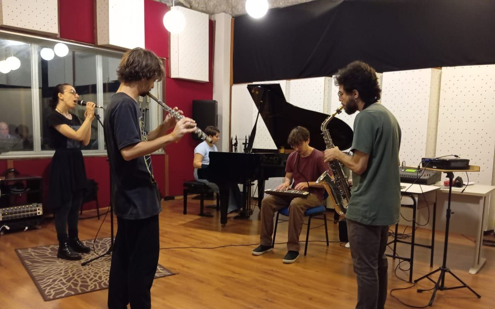
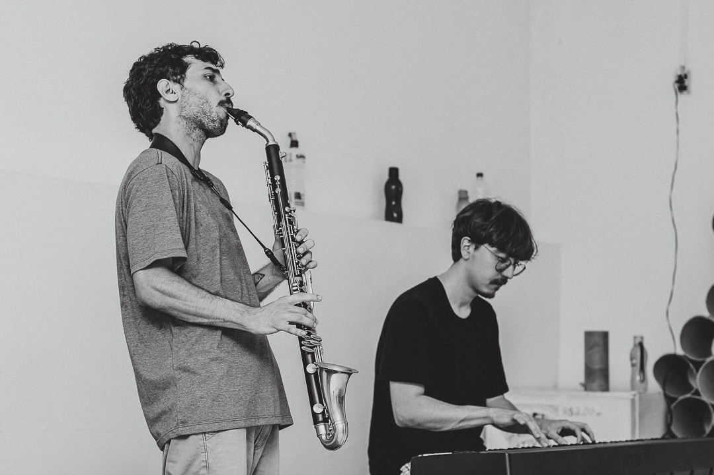
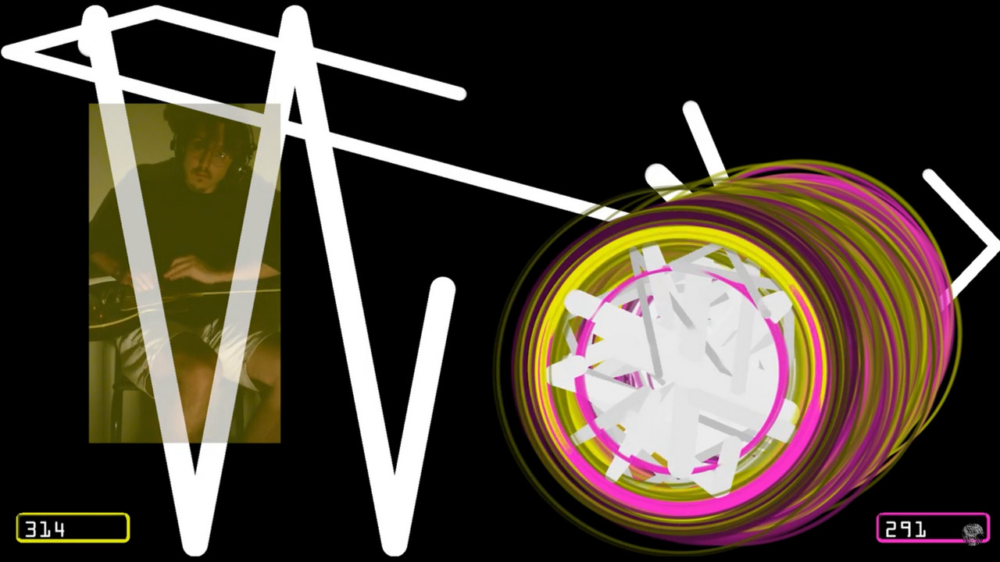
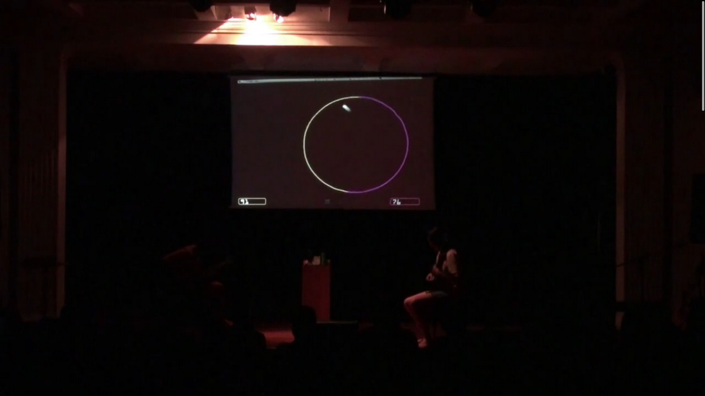
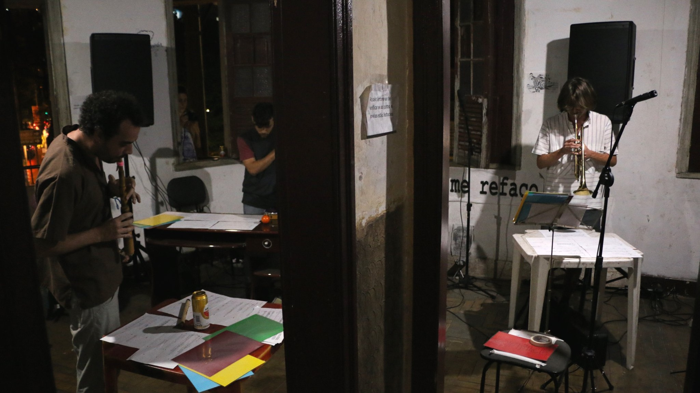
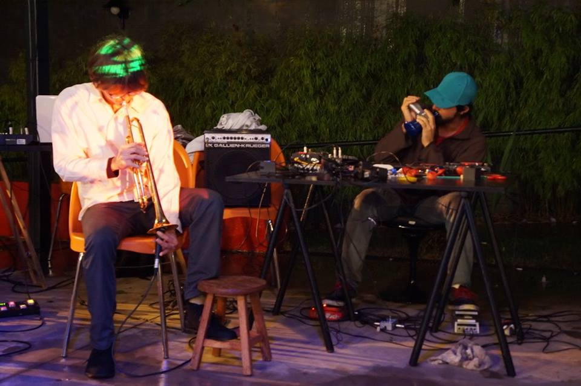
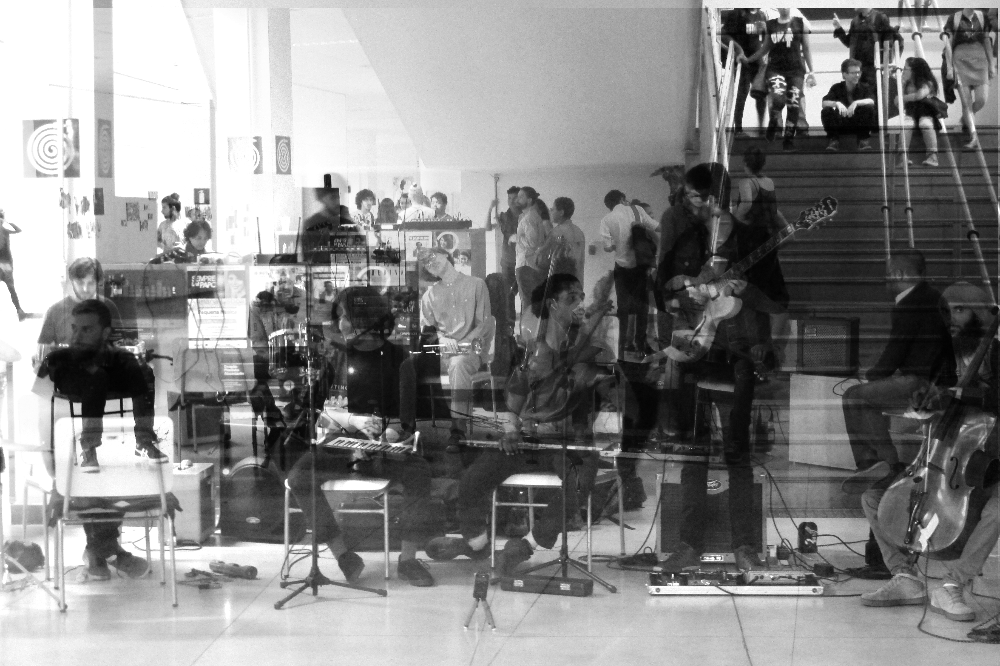
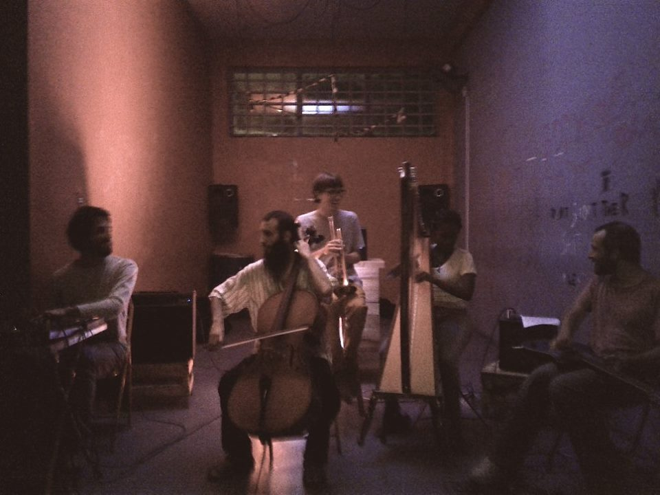

fefo . feed
vem
foi
30/11/2024: Narjara Portugal convida Nó Solto para uma Aula/JAM de contato improvisação.
No Dourado Cais das Artes.
03/11/2024: Ingmá convida para um improviso de encerramento da exposição "Todo mundo mora mal" de Andy Fraga.
Na Casa Caipora.
01/11/2024: Emersão toca no Festival Irradia 2024.
Com transmissão online em Festival Irradia e nas
Rádios Universitária FM 107,9, em Fortaleza e na Universitária
FM 104,7, Vitória.
10/08/2024: Nó Solto, Marcos Bentes e Trio Nessos interpretam partituras gráficas de Fernando Augusto no encerramento de sua exposição A persistência da paisagem.
No MAES - Museu de Arte do Espírito Santo.
31/05/2024: Nó Solto toca partituras gráficas desenhadas pelo público na primeira edição da IN_FLUXOS.
Na Casa Caipora Centro Cultural.
18/03/2024: Nó Solto convida Jenni Prélio e Monica Nitz para uma improvisação coletiva de música e action painting.
Na abertura da exposição Conduções da Contemporaneidade, na GAP-UFES.
31/12/2023: Emersão toca no Festival Internacional de Arte Sonora Monteaudio 23.
Acompanhe a programação em forma y sonido e escute em
Radio Monteaudio
16/12/2023: Narjara Portugal convida Nó Solto para uma JAM de Contato Improvisação n'A Chakra.
Parte do evento "Chakra Solar".
16/10/2023 e 20/10/2023: minicurso Introdução à improvisação livre na XI Jornada Integrada de Extensão e Cultura da UFES.
Ministrado com Gabriel Amorim.

28/09/2023: apresentação da peça Dysgraphia no recital
Acousmatic Music da Butler School of Music.
Espacialização em tempo real por Caio Campos.
27/05/2023: Narjara Portugal e Thiago Sousa convidam
Nó Solto para uma JAM de Contato Improvisação no Espaço
DanSoul.
Nó Solto convida Zé Tom.
15/04/2023: Narjara Portugal e Thiago Sousa convidam Nó Solto para uma JAM de Contato Improvisação no Espaço DanSoul.
Nó Solto convida Jenni Prélio e Mario Schiavini.
18/03/2023: Narjara Portugal e Thiago Sousa convidam Nó Solto para uma JAM de Contato Improvisação no Espaço DanSoul.
Nó Solto é Felippe Brandão e Gabriel Amorim

16/11/2022: trilha sonora improvisada para o filme Medo do Escuro, de Ivo Lopes Araújo, como parte da Mostra Cine Improvisado, no Centro Cultural Unimed-BH.
Com GILU e Henrique Iwao
05/11/2022: Anestesia no Cine Santa Tereza.
Como parte da mostra Timeline BH#7
03/10/2022: Rodrigo Frade toca Bifurcações no Sesc Glória.
Abrindo a série Arena Sonora com participação da Vix Ensemble
21/06/2022: GILU toca Ágora no Conservatório da UFMG.
Em concerto com o grupo de dança TaTo
26/10/2021: Estreia de Silêncio de Chão, em colaboração com o ensemble GILU.
Transmitido na mostra de trabalhos artísticos do III Colóquio Internacional Escrita, Som, Imagem
22/10/2021: vídeo de apresentação da escultura BRUTAL na Mostra SomaRumor II.
Disponível no YouTube
Junho-Outubro/2021: residente no SomaRumor II - 2º Encontro Latinoamericano de Arte Sonora.
23/05/2021: atuação e produção sonora do filme Sobre a mesa de Luiz Fortini, em cartaz na mostra Filmes na Quarentena.
Disponível no YouTube
08/05/2021: participação no filme-partitura Anestesia, de Walter Smetak, no festival Memories in Music. Transmitido via YouTube.
Com direção de Marco Scarassatti e Luiz Pretti
13/04/2021: programação sonora da instalação tropical (uncanny) de Hannah Cepik.
20/10/2020: não-igual no Frestas Telúricas #5.
Tocando PING com Caio Campos a 500km de distância.

15/10/2020: sonorização e trilha para a vinheta do Dia Mundial da Alimentação 2020 da FSP-USP.
02/08/2020: release do projeto welcomeBach.
Script Python para possibilitar uma escuta consistente de repertórios de compositores
03/07/2020: colaboração para a live da peça Mor Morning, de Henrique Iwao.
Com transmissão ao vivo via Frestas Telúricas.
09/05/2020: som para o curta 11th plague of Egypt de Constantin de Tugny.
02/03/2020: release digital da peça acusmática emersão.
15/02/2020: JAM de contato improvisação com TaTo na FUNARTE-MG.
Tocando com Francisco César e Rafael Paulino
07/12/2019: JAM de contato improvisação com TaTo e GILU na FUNARTE-MG.
26/11/2019: estreia de PING, na 34ª MOCÓ, no Conservatório da UFMG.
Jogando contra Caio Campos

23/11/2019: não-igual (≠) no festival Gobierno No!, no Saramandaia.
Produzindo quantidades imensas de ruído com Caio Campos
21/11/2019: improvisação livre com o GILU na Casa Híbrido.
06/11/2019: participação na 1ª edição do FIM: Festival Improvisada Música, com o GILU.
Interpretando ágora e improvisando sem escrúpulos
09/11/2019: JAM de contato improvisação com TaTo e GILU na FUNARTE-MG.
26/10/2019: JAM de contato improvisação com TaTo e GILU na FUNARTE-MG.
08/10/2019: ágora, para ensemble de improvisação, em concerto do projeto HORIZONS.
Tocada pelo ensemble Sonante 21 e Stephan Froleyks
07/10/2019: estreia da peça ágora, em concerto da 13ª Semana da Música de Ouro Branco.
Tocada pelo ensemble Sonante 21 e Stephan Froleyks
12/09/2019: estreia brasileira da peça Holding Office, de Olle Sundström, na Kasa Invisível.
Jogando com e contra João Viana, Luiz Pretti e Marcos Alves

02/08/2019: comemoração do Dia Nacional de Combate à Humanidade, na galeria Mama/Cadela.
Bebendo e praticando código morse com DJ Javaral, Dorothé Depeauw, Henrique Iwao e Preto Matheus
17/07/2019: convidado para a JAM de abertura do 4º BH ImContato Festival
Improvisando com Henrique Iwao, Morgana Mafra, Rafael Paulino e Vanessa Aiseó
10/07/2019: convidado do programa Em Caráter Experimental para um papo sobre improvisação livre na Rádio UFMG Educativa - 104.5 FM.
Conversando com Gabriela Augustha
06/07/2019: improvisação livre com o GILU, no Festival de Inverno da Guignard.
29/06/2019: bifurcações, para flauta e live-electronics e desassossego, para clarineta e live-electronics (estreia), em concerto com o grupo imaginários sonoros no Conservatório da UFMG.
Tocadas por Danielle Reis (flauta) e Emília Carneiro (clarineta)
05/06/2019: música e dança improvisada com o GILU no Centro Cultural da UFMG.
Convidando as bailarinas Ana Rita Nicoliello, Helena Carneiro e Luana Vitra
04/03/2019: Blitzkrieg Noise #08 na calçada da Casa da Valéria, no carnaval do Santa Tereza.
Contribuindo com a diversidade e magia do Carnaval
14/12/2018: apresentação/comentário da peça bifurcações, nos Seminários de Composição da UFMG.
06/12/2018: estreia da peça bifurcações, para flauta e live electronics, no espetáculo imaginários sonoros na galeria da EBA-UFMG.
Tocada por Rodrigo Frade
04/12/2018: improvisação livre com o GILU n'A Casa Verde.
Tocando peças de Nathália Fragoso e Marco Scarassati
26/09/2018: GRudpO no Conservatório da UFMG: música eletroacústica tocada a partir de seis laptops interagindo em tempo real por rede.
Com Breno Bragança, Fernando Rocha, José Padovani, Rubens Silva e Sérgio Freire
08/07/2018: JAM com grupos de contato improvisação na Sala Preta da Escola de Belas Artes.
Com 'Proyeto TerSer Cuerpo', 'Grupo Contemporaneo de Dança Livre', 'TaTo' e 'Terceira Margem'
12/06/2018: concerto com o GILU no Conservatório da UFMG.
Estreia da peça Territórios, de Marco Scarassati
02/06/2018: barulheira desenfreada no Praça 6: Música de Ruído, na Praça 7 de Setembro, Centro de BH.
Solo

Fefo + Quasicrystal

25/05/2018: release digital da peça acusmática dysgraphia.
19/05/2018: convidado para o Quartas de Improviso, edição nº 115, na galeria Mama/Cadela.
Tocando com Iwao-Koole, Deise Oliveira e Joaquim Avelino

18/05/2018: improvisação livre com o GILU e bailarinas, na abertura da exposição Deriva XII.
Com Ana Rita Nicoliello, Duna Dias, Helena Carneiro, Italo Augusto e Rodrigo Antero

30/11/2017: improvisação livre com o GILU na ESMU-UFMG.
Com diretrizes musicais sorteadas em tempo real pelo maestRandom
01/11/2017: convidado para o Quartas de Improviso, edição nº 108, no Luthier Bar.
Com Iwao-Koole, Ana Luzia Pimenta e Daniel Tamietti

27/09/2017: concerto com o GILU, no projeto Viva Música.
25/08/2017: release digital do álbum undois do Tartaruga Cúbica.
17/08/2017: co-masterização do álbum Espumas da Robs Schulze.
2016: improviso coletivo aberto com o DRAUZIUS na semana cultural do IGC-UFMG.
2016: release digital do álbum cadaeco.
2016: improviso coletivo aberto com o DRAUZIUS na EAD-UFMG.
2015: release digital do álbum quatrocordas.
2015: participação no álbum FANK do Tomodachi.
2014: apresentação da dupla Tartaruga Cúbica na semana cultural da FDCE-UFMG.